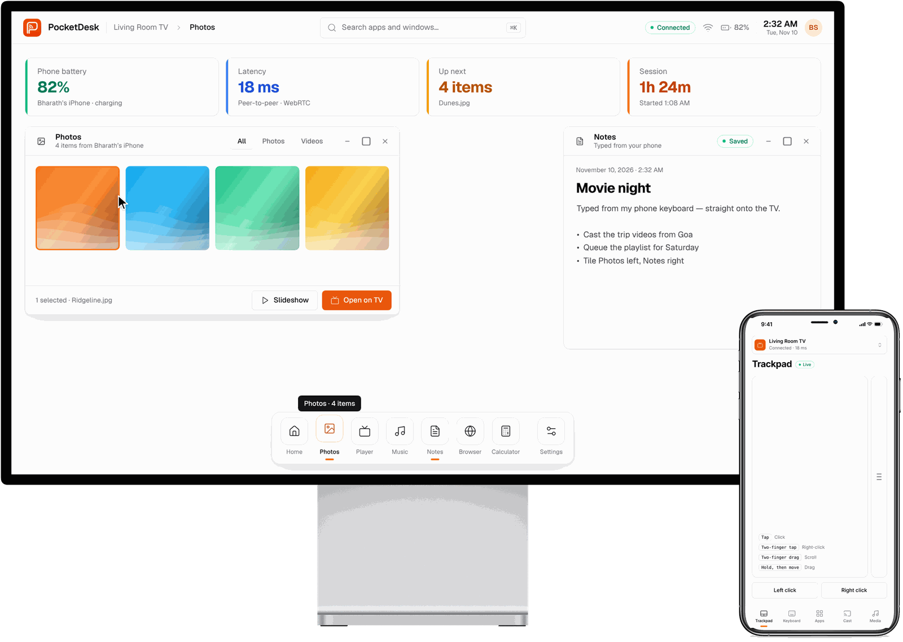

PocketDesk turns your Android phone into a desktop-style workspace. Connect it to a monitor or TV and get windows, a dock and a full desktop on the big screen, with your phone as the trackpad and keyboard.
Free APK · Android 8.0+ · Works with phones that support USB‑C video out · Interactive demo

Everything you need to work on a bigger screen, powered by the phone you already carry.
Monitor, TV or projector over USB‑C or HDMI. No smart TV, Wi‑Fi or internet needed.
Resizable windows, a dock, snapping and tiling, and a quick launcher, sized for a big screen.
Tap to click, two fingers to scroll or right-click, hold to drag windows around.
Type into any field on the desktop, with your phone’s autocorrect and dictation.
Built-in Notes, Browser, Photos, Player, Music and Calculator, open the moment you connect.
A free, open-source APK for Android today. iPhone support is in progress.
Download PocketDesk.apk on your Android phone and open it. Allow “Install unknown apps” when asked.
Plug your phone into a monitor or TV with a USB‑C to HDMI cable or adapter, and choose that input.
The desktop appears on the big screen and your phone becomes its trackpad and keyboard.
Open PocketDesk in the display’s web browser and scan the QR code with your phone. Works with Android and iPhone, no install needed.
Wired mode needs a phone with USB‑C video out (DisplayPort Alt Mode). Every other phone can use wireless mode.
| Samsung Galaxy S8 and later (S · Note · Z · Tab flagships) | Wired + wireless |
| Google Pixel 8 and later | Wired + wireless |
| Motorola Edge flagships (“Ready For” models) | Wired + wireless |
| Sony Xperia 1 / 5 · ASUS ROG Phone | Wired + wireless |
| Huawei Mate 10 / P20 and later | Wired + wireless |
| Pixel 7 and earlier · most Xiaomi, Redmi & POCO · most OnePlus (no video out) | Wireless |
| iPhone & iPad | Wireless Wired app in progress |
| Monitor, TV or projector with HDMI (USB‑C → HDMI cable) | Wired · offline |
| USB‑C monitor (single cable) | Wired · offline |
| Samsung smart TV (Tizen, 2017+) · LG (webOS) | Wireless · TV browser |
| Android TV · Google TV · Fire TV stick | Wireless · TV browser |
| Any computer (Windows · Mac · Linux) | Wireless · any browser |
| Old TV with no smart features | Wired or add a streaming stick |
Rule of thumb: if your phone’s spec sheet mentions “DisplayPort Alt Mode”, “video output” or “DeX”, wired mode works. If the screen stays blank when you plug in, your phone doesn’t have video out — wireless mode works on every phone. Full details and build notes: docs/WIRED.md.
Phones that send video out over USB‑C (DisplayPort Alt Mode), such as many Samsung Galaxy S, Note and Tab models, Pixel 8 and later, and recent Motorola and OnePlus flagships. If your phone can’t, use wireless mode instead. See the compatibility list.
Not with a cable. Wired mode runs entirely on your phone and works offline. Wireless mode needs both devices online to find each other.
Not yet. PocketDesk comes with its own desktop apps (Notes, Browser, Photos, Player, Music, Calculator). Your other phone apps keep running on the phone as usual.
Wireless mode already works with iPhone. A native iPhone app for wired displays is in progress.
Yes. PocketDesk is open source under the MIT licence. The code, including the Android app, is on GitHub.
Download the free Android app, plug into a display and start working.